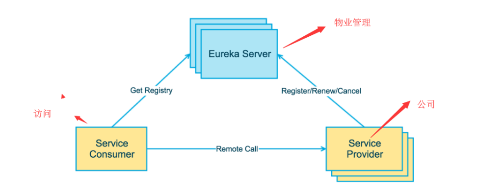
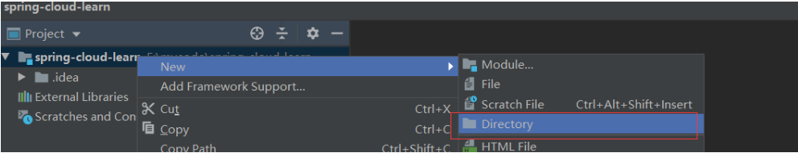
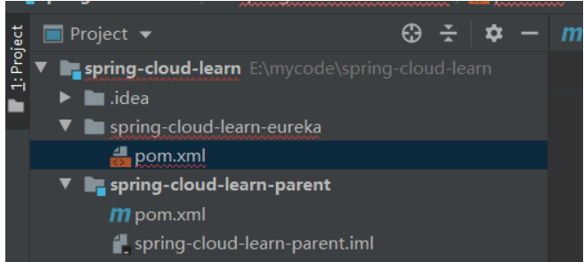

离上一篇微服务的基本概念已经过去了几个月，在写那篇博客之前，自己还并未真正的使用微服务架构，很多理解还存在概念上。后面换了公司，新公司既用了SpringCloud也用了Dubbo+Zookeeper，就像上一篇文章说的，当一个服务是面向外部或者是直接提供给前端调用的，那么就使用SpringCloud，而一些内部公用的（如发送短信），就使用Dubbo+Zookeeper，因为他在内部调用更像调用接一个接口，效率也会比较高，而一些模块型的功能，我们则使用SpringCloud。
在已经存在了成熟的开发框架后，微服务本身也没什么技术难点，架构思想才是最重要的，要在不断的实践中去探索，废话不多说，来学习SpringCloud的技术。
SpringCloud基于SpringBoot提供了一套微服务解决方案，包括服务注册与发现，配置中心，全链路监控，服务网关，负载均衡，熔断器等组件，除了基于NetFlix的开源组件做高度抽象封装之外，还有一些选型中立的开源组件。
而SpringBoot并没有重复制造轮子，它将目前各家公司开发的比较成熟、经得起实际考验的服务框架组合起来，通过SpringBoot风格进行再封装屏蔽掉了复杂的配置和实现原理，最终给开发者留出了一套简单易懂、易部署和易维护的分布式系统开发工具包。
SpringCloud提供了全家桶式技术解决方案，对我们使用者来说是极其简单的。但是要学会SpringCloud的前提那必定要学会SpringBoot。
了解完整体的架构图后，就来进行一个个的技术栈的学习，学习的网站推荐：
Spring Cloud中国社区：http://springcloud.cn/
Spring Cloud中文网： https://www.springcloud.cc/
一般架构的开发过程中，我们也会去调用一些外部服务，这个时候都是直接去调用，没有服务注册与发现的概念。但在微服务架构中，我们会按照模块将系统分为多个微服务，而且每个服务我们会做成集群，那这些服务的数量是很大的，这些服务之间可能会被前端直接调用，也有可能互相调用，而且调用关系十分复杂。
每个服务实例的网络位置（IP与端口）信息，而且这些服务有可能会下线（奔溃），也有可能扩容，那这个时候服务之间相互去记录这些信息肯定是非常麻烦的，这个时候我们需要一个服务的治理组件。
在定义服务治理之前，我们可以类比一个场景，就是我们工作大楼的物业，公司入驻这栋大楼，就会在物业处注册自己的一些信息，并且交物业费，那这个物业管理类似服务治理。公司相当于一个一个服务，当外面的人想要找到公司提供服务时，可以去物业处了解我们的信息，然后再找到我们，而本身不需要记录我们公司的信息，因为他记不想记住这么多信息，而且就算记了，我们公司信息也可能会改变，比如破产倒闭了，或者又发展壮大换了地方了。我们定时向物业交管理费，一旦我们不交物业费了，那物业就认为我们不在这里了，那其他人在来找也当做公司不存在了，Eureka的服务注册与发现就有点类似这种场景。
Spring Cloud 封装了 Netflix 公司开发的 Eureka 模块来实现服务注册和发现，Eureka 采用了 C-S 的设计架构。Eureka Server 作为服务注册功能的服务器，它是服务注册中心（物业管理）。而系统中的其他微服务（公司），使用 Eureka 的客户端连接到 Eureka Server，并维持心跳连接（交物业费）。这样系统的维护人员就可以通过 Eureka Server 来监控系统中各个微服务是否正常运行。Spring Cloud 的一些其他模块（访问人员）就可以通过 Eureka Server 来发现系统中的其他微服务，并执行相关的逻辑。
Eureka包含两个组件：Eureka Server和Eureka Client
Eureka Server提供服务注册服务各个节点启动后，会在EurekaServer中进行注册，这样EurekaServer中的服务注册表中将会存储所有可用服务节点的信息，服务节点的信息可以在界面中直观的看到。
EurekaClient是一个Java客户端，用于简化Eureka Server的交互，客户端同时也具备一个内置的、使用轮询(round-robin)负载算法的负载均衡器。在应用启动后，将会向Eureka Server发送心跳(默认周期为30秒)。如果Eureka Server在多个心跳周期内没有接收到某个节点的心跳，EurekaServer将会从服务注册表中把这个服务节点移除（默认90秒）。

三大角色：
Eureka Server 提供服务注册和发现。
Service Provider服务提供方将自身服务注册到Eureka，从而使服务消费方能够找到。
Service Consumer服务消费方从Eureka获取注册服务列表，从而能够消费服务。
了解了概念，我们现在来实践一下，因为还会学习更多的的组件，那么我们创建工程也是从整体来创建，还要了解的一点是，我们现在做的是微服务项目，那其实这些微服务就是一个个独立的项目，这些项目可以是完全分开的，跟之前的模块概念是不一样的。
直接先创建一个名为spring-cloud-learn 的文件夹，这个文件夹是为了放各个工程的，然后通过idea 打开这个文件夹，然后在这个文件夹下面创建一个文件夹：spring-cloud-learn-parent

然后在这个文件夹下增加一个pom.xml文件：
<?xml version="1.0" encoding="UTF-8"?>
<project xmlns="http://maven.apache.org/POM/4.0.0" xmlns:xsi="http://www.w3.org/2001/XMLSchema-instance"
xsi:schemaLocation="http://maven.apache.org/POM/4.0.0 http://maven.apache.org/xsd/maven-4.0.0.xsd">
<modelVersion>4.0.0</modelVersion>
<parent>
<groupId>org.springframework.boot</groupId>
<artifactId>spring-boot-starter-parent</artifactId>
<version>2.0.2.RELEASE</version>
</parent>
<groupId>com.yuanqinnan</groupId>
<artifactId>spring-cloud-learn-parent</artifactId>
<version>1.0.0-SNAPSHOT</version>
<packaging>pom</packaging>
<properties>
<!-- Environment Settings -->
<java.version>1.8</java.version>
<project.build.sourceEncoding>UTF-8</project.build.sourceEncoding>
<project.reporting.outputEncoding>UTF-8</project.reporting.outputEncoding>
<maven.compiler.source>1.8</maven.compiler.source>
<maven.compiler.target>1.8</maven.compiler.target>
<!-- Spring Settings -->
<spring-cloud.version>Finchley.RELEASE</spring-cloud.version>
</properties>
<dependencyManagement>
<dependencies>
<dependency>
<groupId>org.springframework.cloud</groupId>
<artifactId>spring-cloud-dependencies</artifactId>
<version>${spring-cloud.version}</version>
<type>pom</type>
<scope>import</scope>
</dependency>
</dependencies>
</dependencyManagement>
<build>
<finalName>spring-cloud-learn-parent</finalName>
<!-- 资源文件配置 -->
<resources>
<resource>
<directory>src/main/java</directory>
<excludes>
<exclude>**/*.java</exclude>
</excludes>
</resource>
<resource>
<directory>src/main/resources</directory>
</resource>
</resources>
<plugins>
<plugin>
<groupId>org.apache.maven.plugins</groupId>
<artifactId>maven-resources-plugin</artifactId>
<configuration>
<delimiters>
<delimit>$</delimit>
</delimiters>
</configuration>
</plugin>
</plugins>
</build>
</project>将这个项目手动托管成maven项目，这个项目是用于管理依赖的，管理一些公共的依赖，就是一些简单的依赖，需要主要以的是SpringCloud的版本很让人头疼，他不仅有数字，还有字母，这些字母是伦敦地铁站的开头字母。
主要的项目创建完成之后，我们来创建一个用于服务注册的项目，创建过程与spring-cloud-learn-parent相同，也是创建一个文件夹spring-cloud-learn-eureka，然后在文件夹下增加pom.xml文件，然后再手动托管

<project xmlns="http://maven.apache.org/POM/4.0.0" xmlns:xsi="http://www.w3.org/2001/XMLSchema-instance"
xsi:schemaLocation="http://maven.apache.org/POM/4.0.0 http://maven.apache.org/xsd/maven-4.0.0.xsd">
<modelVersion>4.0.0</modelVersion>
<parent>
<groupId>com.yuanqinnan</groupId>
<artifactId>spring-cloud-learn-parent</artifactId>
<version>1.0.0-SNAPSHOT</version>
</parent>
<artifactId>>spring-cloud-learn-eureka</artifactId>
<packaging>jar</packaging>
<dependencies>
<!--eureka-server服务端 -->
<dependency>
<groupId>org.springframework.cloud</groupId>
<artifactId>spring-cloud-starter-netflix-eureka-server</artifactId>
</dependency>
</dependencies>
</project>然后再按照maven的目录结构来创建目录
然后创建一个启动类，这些都是Springboot项目中的知识，然后再增加一个启动类，上面增加@EnableEurekaServer
@EnableEurekaServer
@SpringBootApplication
public class EurekaApplication {
public static void main(String[] args) {
SpringApplication.run(EurekaApplication.class, args);
}
}然后增加配置文件application.yml
spring:
application:
name: spring-cloud-learn-eureka
server:
port: 8761
eureka:
instance:
hostname: localhost
client:
#表示是否将自己注册到Eureka Server，默认为true。
registerWithEureka: false
#表示是否从Eureka Server获取注册信息，默认为true。
fetchRegistry: false
serviceUrl:
#设置与Eureka Server交互的地址，查询服务和注册服务都需要依赖这个地址。默认是http://localhost:8761/eureka ；多个地址可使用 , 分隔
defaultZone: http://${eureka.instance.hostname}:${server.port}/eureka/需要注意的配置都写在上面了，很好理解，这个时候我们可以启动项目了：
这个时候相当于已经创建好注册中心了，也就是Eureka Server，那现在再来创建服务提供者
按照上面创建注册服务的方式我们再创建一个部门服务提供者，pom.xml文件：
<?xml version="1.0" encoding="UTF-8"?>
<project xmlns="http://maven.apache.org/POM/4.0.0" xmlns:xsi="http://www.w3.org/2001/XMLSchema-instance"
xsi:schemaLocation="http://maven.apache.org/POM/4.0.0 http://maven.apache.org/xsd/maven-4.0.0.xsd">
<modelVersion>4.0.0</modelVersion>
<parent>
<groupId>com.yuanqinnan</groupId>
<artifactId>spring-cloud-learn-parent</artifactId>
<version>1.0.0-SNAPSHOT</version>
</parent>
<artifactId>spring-cloud-learn-provider-dept</artifactId>
<packaging>jar</packaging>
<dependencies>
<!-- Spring Boot Begin -->
<dependency>
<groupId>org.springframework.boot</groupId>
<artifactId>spring-boot-starter-test</artifactId>
<scope>test</scope>
</dependency>
<!-- Spring Boot End -->
<!-- Spring Cloud Begin -->
<dependency>
<groupId>org.springframework.cloud</groupId>
<artifactId>spring-cloud-starter-netflix-eureka-server</artifactId>
</dependency>
<!-- Spring Cloud End -->
</dependencies>
</project>配置文件：
spring:
application:
name: spring-cloud-learn-provider-dept
server:
port: 8762
eureka:
client:
serviceUrl:
#服务注册地址
defaultZone: http://localhost:8761/eureka/然后创建启动类：
@EnableEurekaClient
@SpringBootApplication
public class ProviderDeptApplication {
public static void main(String[] args) {
SpringApplication.run(ProviderDeptApplication.class, args);
}
}启动时idea会弹出此对话框，选择第一个这个时候我们可以方便的管理多个启动服务
@Configuration
public class RestTemplateConfiguration {
@Bean
@LoadBalanced
public RestTemplate restTemplate() {
return new RestTemplate();
}
}然后我们需要创建一个service，用来请求服务，这里调用的地方指定了服务名称，不用管ip 地址与端口
@Service
public class DeptService {
@Autowired
private RestTemplate restTemplate;
public String sayHi(String message) {
//这里指指定了服务名称，不用管ip 地址与端口
return restTemplate.getForObject("http://SPRING-CLOUD-LEARN-PROVIDER-DEPT/hi?message=" + message, String.class);
}
}然后创建一个controller，给前端接口调用
@RestController
public class DeptController {
@Autowired
private DeptService deptService;
@RequestMapping(value = "hi", method = RequestMethod.GET)
public String sayHi(@RequestParam String message) {
return deptService.sayHi(message);
}
}启动成功后，刷新Eureka 服务可以看到服务已经注册上来了，这里的红色提示是指Eureka 服务只部署了一台，不具备高可用，后面我们再来部署集群
不过这个时候服务者没有提供确切的服务，添加一个方法
@RestController
public class DeptController {
@Value("${server.port}")
private String port;
@RequestMapping(value = "hi", method = RequestMethod.GET)
public String sayHi(@RequestParam(value = "message") String message) {
return String.format("Hi，your message is : %s i am from port : %s", message, port);
}
}这里为了后面显示集群效果，我们返回端口号
<?xml version="1.0" encoding="UTF-8"?>
<project xmlns="http://maven.apache.org/POM/4.0.0" xmlns:xsi="http://www.w3.org/2001/XMLSchema-instance"
xsi:schemaLocation="http://maven.apache.org/POM/4.0.0 http://maven.apache.org/xsd/maven-4.0.0.xsd">
<modelVersion>4.0.0</modelVersion>
<parent>
<groupId>com.yuanqinnan</groupId>
<artifactId>spring-cloud-learn-parent</artifactId>
<version>1.0.0-SNAPSHOT</version>
</parent>
<artifactId>spring-cloud-learn-consumer-dept-ribbon</artifactId>
<packaging>jar</packaging>
<dependencies>
<!-- Spring Boot Begin -->
<dependency>
<groupId>org.springframework.boot</groupId>
<artifactId>spring-boot-starter-web</artifactId>
</dependency>
<dependency>
<groupId>org.springframework.boot</groupId>
<artifactId>spring-boot-starter-tomcat</artifactId>
</dependency>
<dependency>
<groupId>org.springframework.boot</groupId>
<artifactId>spring-boot-starter-test</artifactId>
<scope>test</scope>
</dependency>
<!-- Spring Boot End -->
<!-- Spring Cloud Begin -->
<dependency>
<groupId>org.springframework.cloud</groupId>
<artifactId>spring-cloud-starter-netflix-eureka-server</artifactId>
</dependency>
<dependency>
<groupId>org.springframework.cloud</groupId>
<artifactId>spring-cloud-starter-netflix-ribbon</artifactId>
</dependency>
<!-- Spring Cloud End -->
</dependencies>
</project>配置文件：
spring:
application:
name: spring-cloud-learn-consumer-dept-ribbon
server:
port: 8764
eureka:
client:
serviceUrl:
defaultZone: http://localhost:8761/eureka/启动项：
@EnableDiscoveryClient
@SpringBootApplication
public class ConsumerDeptRibbonApplication {
public static void main(String[] args) {
SpringApplication.run(ConsumerDeptRibbonApplication.class, args);
}
}这个服务我们稍微要给一个配置，因为我们要调用服务提供者，会使用到RestTemplate调用方式，添加一个配置项，这里面还有一个负载均衡功能，用起来也很简单
@RestController
public class DeptController {
@Autowired
private DeptService deptService;
@RequestMapping(value = "hi", method = RequestMethod.GET)
public String sayHi(@RequestParam String message) {
return deptService.sayHi(message);
}
}
这样消费者就算完成了，我们可以访问这个消费者了，这个消费者调用的是提供者的方法
这样就已经完成了服务的注册中心开发，提供者开发及消费者开发，用起来非常简单，这里我们看到有@LoadBalanced这个注解，但是服务只有一个，所有没有效果，我们可以再启动一个提供者，这里我们可以直接修改端口号再启动，只要注意修改一个地方的配置
我们把提供者的端口号改成8763，再启动一次
这里启动了两个提供者，我们刷新下注册中心：
增加了一个服务，但是消费者是感受不到的，然后我们在多次刷新消费者，可以看到两个服务在轮训调用，这里我们就实现了负载均衡：
使用这些组件就是这么简单，这里只是做了最简单的微服务注册与发现，未做服务中心集群，后面我们将再深入的学习。